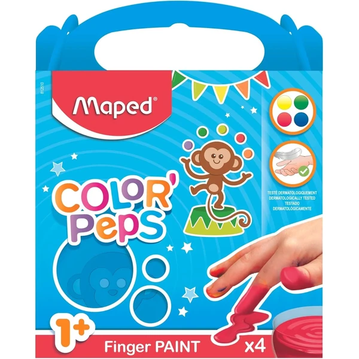

👶 1 año
Pintura de dedos Color'Peps Maped
Un set de cuatro colores de pintura de dedos lavable y no tóxica, lista para usar sin necesidad de mezclar. Pensada específicamente para las primeras experiencias con la pintura a partir del año.
⭐
¿Por qué nos gusta?
- ✔Cuatro colores, lista para usar.
- ✔Lavable y no tóxica.
- ✔Pensada específicamente desde el año.
💬
Lo que más destacan las familias
Muchos padres coinciden en que se limpia con facilidad tanto de las manos como de la ropa, lo que quita bastante presión a la hora de dejar pintar libremente. También gusta que venga lista para usar, sin mezclas ni preparación previa.